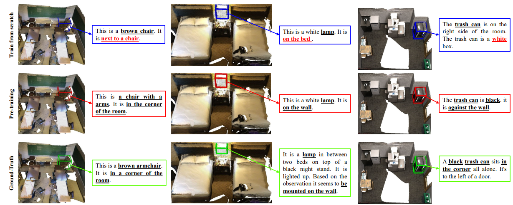
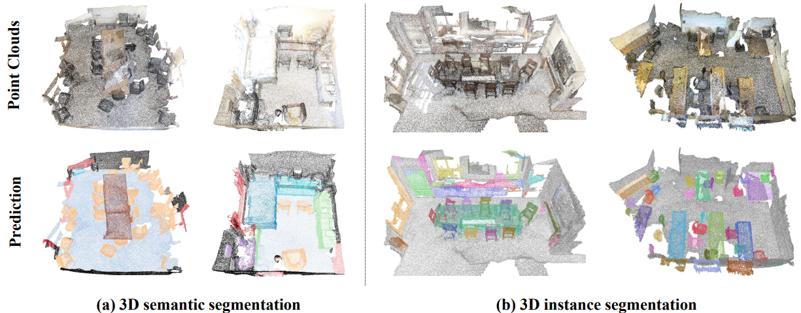

|
Haihong Xiao（肖海鸿） I'm a PhD student at South China University of Technology, Department of School of Automation Science and Engineering, supervised by Professor Wenxiong Kang. My research interests lie in 3D Vision, scene representation learning, point cloud processing. 你好, 我是华南理工大学自动化科学与工程学院在读四年级博士生肖海鸿，导师是康文雄教授。研究方向聚焦三维视觉、场景表示学习和点云处理。 In 2023-2024, I was a CSC-funded visiting PhD student at Nanyang Technological University, Singapore, supervised by Professor Ying He. My research focused on real-time rendering and geometric learning. 2023-2024年，受国家留学基金委（CSC）资助赴新加坡南洋理工大学进行联合培养，导师为贺英教授。期间聚焦实时渲染与几何学习领域的研究。 |

|
Selected PublicationMy first-authored and co-authored publications are listed below, with * denoting equivalent contribution. |

|
Tri2plane: Advancing Neural Implicit Surface Reconstruction for Indoor Scenes
Yiping Xie*, Haihong Xiao*, Wenxiong Kang IEEE Transactions on Multimedia (TMM), Accepted, 2024 |

|
Semantic Scene Completion via Semantic-aware Guidance and Interactive Refinement Transformer
Haihong Xiao, Wenxiong Kang, Hao Liu, Yuqiong Li, Ying He IEEE Transactions on Circuits and Systems for Video Technology (TCSVT), 2024 |

|
EA-MVSNet: Learning Error-Awareness for Enhanced Multi-View Stereo
Wencong Gu*, Haihong Xiao*, Xueyan Zhao, Wenxiong Kang IEEE Transactions on Circuits and Systems for Video Technology (TCSVT), 2024 |

|
Point Cloud Completion via Self-projected View Augmentation and Implicit Field Constraint
Haihong Xiao, Ying He, Hao Liu, Wenxiong Kang, Yuqiong Li IEEE Transactions on Circuits and Systems for Video Technology (TCSVT), 2024 |

|
Instance-Aware Monocular 3D Semantic Scene Completion
Haihong Xiao, Hongbin Xu, Wenxiong Kang, Yuqiong Li IEEE Transactions on Intelligent Transportation Systems (TITS), 2024 |

|
Text-Free Controllable 3-D Point Cloud Generation
Haihong Xiao, Wenxiong Kang, Yuqiong Li, Hongbin Xu IEEE Transactions on Instrumentation and Measurement (TIM), 2024 |

|
Distinguishing and Matching-Aware Unsupervised Point Cloud Completion
Haihong Xiao, Yuqiong Li, Wenxiong Kang, Qiuxia Wu IEEE Transactions on Circuits and Systems for Video Technology (TCSVT), 2023 |

|
Multi-Dimensional Graph Interactional Network for Progressive Point Cloud Completion
Haihong Xiao, Hongbin Xu, Wenxiong Kang, Yuqiong Li IEEE Transactions on Instrumentation and Measurement (TIM), 2023 |

|
PointDC: Unsupervised Semantic Segmentation of 3D Point Clouds via Cross-modal Distillation and Super-Voxel Clustering
Zisheng Chen, Hongbin Xu, Weitao Chen, Zhipeng Zhou, Haihong Xiao, Baigui Sun, Xuansong Xie IEEE/CVF International Conference on Computer Vision (ICCV), 2023 |

|
Semi-supervised Deep Multi-view Stereo
Hongbin Xu, Weitao Chen, Yang Liu, Zhipeng Zhou, Haihong Xiao, Baigui Sun, Xuansong Xie, Wenxiong Kang Proceedings of the 31st ACM International Conference on Multimedia (ACM MM), 2023 |
Preprinted VersionMy first-authored and co-authored publications are listed below, with * denoting equivalent contribution. |
|  |
3D Scene Graph Guided Vision-Language Pre-training
Hao Liu, Yanni Ma, Yan Liu, Haihong Xiao, Ying He arxiv, under review, 2025 |
|  |
Point Cloud Unsupervised Pre-training via 3D Gaussian Splatting
Hao Liu, Minglin Chen, Yanni Ma, Haihong Xiao, Ying He arxiv, under review, 2025 |

|
Geometry-Aware 3D Gaussian Representation for Real-Time Rendering of Large-Scale Scenes
Haihong Xiao*, Jianan Zou*, Shuai Xing, Pengcheng Li, Wenxiong Kang under review, 2024 |

|
EA-3DGS: Efficient and Adaptive 3D Gaussians with Highly Enhanced Quality for outdoor scenes
Jianlin Guo*, Haihong Xiao*, Wenxiong Kang under review, 2024 |
Miscellanea |
 |
Reviewer for IEEE Transactions on Visualization and Computer Graphics
Reviewer for IEEE Transactions on Circuits and Systems for Video Technology Reviewer for ACM International Conference on Multimedia Reviewer for IEEE Internet of Things Journal Reviewer for Pattern Recognition Reviewer for Neural Networks Reviewer for Knowledge-based Systems Reviewer for Neurocomputing Reviewer for Pattern Recognition and Computer Vision |

|
National Scholarship (1st, 2024)
国家奖学金, 2024 China Scholarship Council (CSC) Scholarship，2023 国家留学基金委公派研究生项目奖学金, 2023 President's Scholarship, South China University of Technology, 2024 华南理工大学校长奖学金, 2024 President's Scholarship, South China University of Technology, 2023 华南理工大学校长奖学金, 2023 Outstanding Graduate Award, Nanjing Agricultural University, 2021 南京农业大学优秀毕业研究生, 2021 |
|
This webpage template was recycled from Jon Barron. |